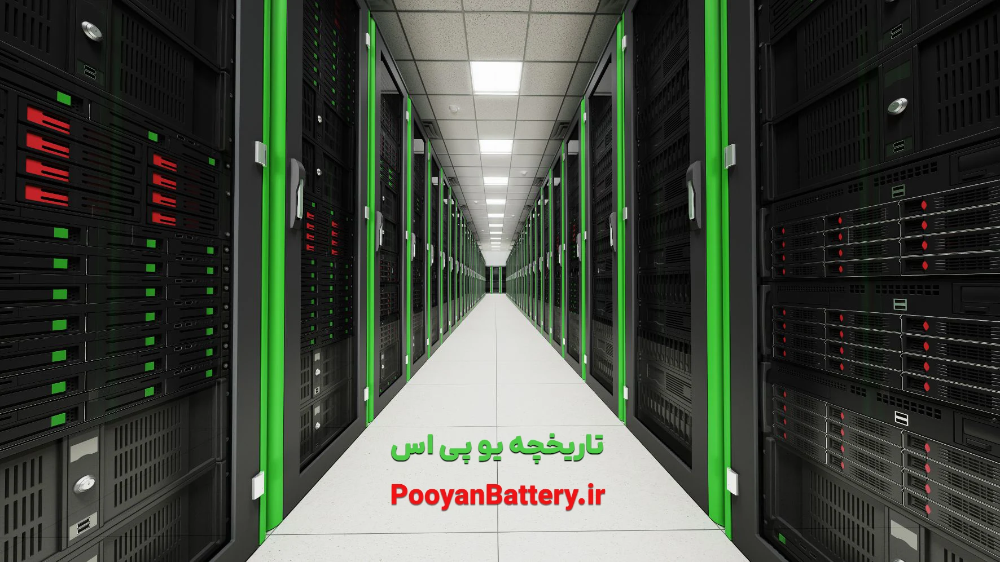

سیستم منبع تغذیه بدون وقفه (UPS) برق پشتیبان را برای برنامه ها و تجهیزات فراهم می کند. اگر منبع اصلی برق به دلیل آب و هوا، نوسانات نوسانات برق، بلایای طبیعی یا مسائل دیگر قطع شود، UPS برق را برای مدت زمانی از بسته باتری خود تامین می کند.
منبع تغذیه اضطراری تاریخچه جالبی دارد و از اولین معرفی آن در سال 1934 تغییرات بسیاری کرده است. برای اطلاعات بیشتر در مورد تاریخچه منبع تغذیه اضطراری به ادامه مطلب مراجعه کنید.

تاریخچه یو پی اس
تاریخچه یو پی اس از ابتدا تا امروز
چه کسی منبع تغذیه بدون وقفه را اختراع کرد؟
جان جی هانلی مخترع منبع تغذیه بدون وقفه بود. در زمان خود به قطارهای مسافربری ریلی علاقه مند بود. این سیستم های ریلی با برق کار می کردند و او نگران ایمنی مسافران بود و اینکه اگر سیستم های الکتریکی در قطارهای مسافری ریلی به نحوی از کار بیفتند، ممکن است قطار مسافربری بدون کنترل توسط اپراتور قطار به حرکت خود ادامه دهد.
جان هانلی اولین کسی بود که یو پی اس را اختراع کرد. جان هانلی اولین منبع تغذیه اضطراری را در سال 1934 ساخت. این منبع تغذیه به مقابله با آسیبهای ناشی از جهشها و نوسانات فعلی به سختافزار کمک میکرد و در برابر از دست دادن داده ها و فساد محافظت می کرد. هنگام بررسی تاریخچه یو پی اس اسامی زیادی به چشم می خورد، اما جان هانلی یکی از مهمترین و تاثیر گذارترین شخصیت های علمی در این عرصه است، هرچند که ایده اولیه او امروز بسیار ساده به نظر می رسد اما پردازش و اجرای این ایده سبب ایجاد مسیری شد که تا به امروز ادامه یافته و باعث تولید دستگاه های بسیار پیشرفته UPS شده است.
در سال 1934، او حق ثبت اختراع را برای “دستگاه برای حفظ تامین بیوقفه و بدون وقفه انرژی الکتریکی” به دست آورد. عملکرد دستگاه این بود که امکان تعویض خودکار باتری را در صورت قطع برق فراهم کند.
در عین حال، یک منبع الکتریکی خارجی در طول عملیات منظم، برق باتری دستگاه را تامین می کند. این نام بعداً به منبع تغذیه بدون وقفه (UPS) تغییر یافت.
اولین سیستمهای UPS از طرحهای چرخشی چرخ لنگر استفاده میکردند که تنها قدرت پشتیبان را برای حدود 20 ثانیه تا 90 ثانیه تأمین میکرد. چرخ فلایویل با سرعت بالا می چرخد و انرژی جنبشی را ایجاد می کند که ذخیره می شود.
اگر برق نوسان کند یا از کار بیفتد، انرژی جنبشی فلایویل جریان DC را به برنامه ارائه می کند. یو پی اس چرخشی فلایویل که یک فناوری سبز در نظر گرفته می شود، امروزه هنوز برای عملکردهای پشتیبان کوچکتر استفاده می شود، زیرا می توانند تا 20 سال دوام بیاورند.
منبع تغذیه بدون وقفه چگونه کار می کند؟
یک سیستم یو پی اس به عنوان منبع تغذیه پشتیبان و همچنین محافظ برق کار می کند. به منبع برق اصلی (پریز دیوار) و مستقیماً به برنامه کاربردی یا به یک واحد توزیع برق که به چندین تجهیزات متصل است متصل می شود.
در صورت قطع برق، یو پی اس به طور خودکار به بسته باتری خود سوئیچ می کند تا شروع به تغذیه دستگاه ها کند. این راه حل به شرکت زمان کافی برای ارزیابی مشکل برق، رفع مشکلات تجهیزات و/یا ذخیره اسناد و داده های الکترونیکی می دهد. مقدار برق پشتیبان ارائه شده توسط سیستم UPS به ظرفیت بسته باتری و نیاز برق تجهیزات متصل بستگی دارد.
در برخی از تنظیمات، دو سیستم UPS ممکن است متصل شوند. اگر باتریUPS اول تمام شود یا با خرابی مواجه شود، سیستم UPS دوم برای تامین برق پشتیبان وارد عمل می شود.
چند نوع یو پی اس وجود دارد؟
3 توپوگرافی اساسی برای سیستم های UPS وجود دارد: آفلاین یا آماده به کار، تبدیل دوگانه، و خط تعاملی. اینها را نباید با منابع تغذیه قطعی (IPS) که بیشتر برای روشنایی اضطراری استفاده می شود، اشتباه گرفت. نوع سیستم یو پی اس مورد استفاده بر اساس ویژگی ها، هزینه ها و ایمنی مورد نظر خواهد بود.
یو پی اس آفلاین یا آماده به کار
سیستم های یو پی اس آفلاین/استندبای اساسی ترین دستگاه هایی هستند که حفاظت از نوسانات و قدرت پشتیبان را ارائه می دهند. UPS برق AC را از منبع اصلی برق AC برای شارژ باتری داخلی و مستقیماً به بار AC هدایت می کند.
سپس از یک اینورتر برای تبدیل برق باتری DC به برق AC به بار در هنگام قطع برق استفاده می کند. از یک سوئیچ الکترونیکی برای تغییر منبع تغذیه، باتری DC یا برق AC اصلی استفاده می کند تا جریان الکتریکی از خط خروجی عبور کند.
همچنین بخوانید : ارتباط برق DC با یو پی اس
این سوئیچ الکترونیکی معمولاً زیر چرخه است، به این معنی که بسیار سریع اتفاق می افتد بنابراین تجهیزات هنگام بارگیری وقفه ای را حس نخواهند کرد. این نوع یو پی اس ها برای مقابله با نوسانات، خاموشی ها، خاموشی ها طراحی شده اند و معمولا کم هزینه ترین نوع هستند.
یو پی اس دو تبدیلی
سیستمهای UPS با تبدیل دوبل از یک یکسو کننده برای تبدیل برق AC ورودی به برق DC استفاده میکنند که برای شارژ باتری و تغذیه اینورتر استفاده میشود. اینورتر برق DC را دوباره به برق AC تغییر می دهد تا بار را تغذیه کند.
به دلیل این تبدیل دوگانه، نوسانات، جهش ها یا سایر ناهنجاری ها در برق AC ورودی هرگز توسط بارهای بحرانی روی خروجی واحد دیده نمی شود. یو پی اس دو تبدیلی بهترین نوع واحد در نظر گرفته می شود، در حالی که به دلیل همیشه کارکردن و ویژگی های تهویه برق آن، قیمت بیشتری نسبت به سایرین دارد.
علاوه بر کنترل نوسانات، خاموشی ها و خاموشی ها، UPS با تبدیل دوگانه، ولتاژ بیش از حد/کمتر و همچنین نویز خط و تغییرات فرکانس را مدیریت می کند.
یو پی اس لاین اینتراکتیو
سیستمهای UPS تعاملی خطی از یک ترانسفورماتور فرورزونانت برای کمک به تثبیت برق AC در هنگام وقوع نوسانات ولتاژ الکتریکی استفاده میکنند. تفاوت اصلی با این نوع سیستم UPS در این است که وقتی ولتاژ الکتریکی کاهش می یابد، از ترانسفورماتور فرورزونانت برای حمل بار برای لحظه ای کوتاه استفاده می کند تا زمانی که باتری از طریق اینورتر و ترانسفورماتور به بار تخلیه شود.
در حالی که اکثر مشکلات مشابه یو پی اس با تبدیل دوگانه را حل می کند، سطح حفاظتی مشابه یک سیستم یو پی اس با تبدیل دوگانه را در برابر خط برق ارائه نمی دهد.
سیستم های یو پی اس چه کاربردهایی دارند؟
در طول تاریخچه سیستم منبع تغذیه بدون وقفه، وظیفه اصلی آن تامین برق پشتیبان اضطراری در صورت قطع برق از منبع اصلی بوده است. این اجازه می دهد تا کار ادامه یابد یا زمان کافی برای خاموش کردن منظم سیستم ها برای جلوگیری از آسیب و از دست دادن داده ها کافی باشد.
با پیشرفت تکنولوژی، سیستمهای UPS بهگونهای تکامل یافتهاند که کارآمدتر، قابل اعتمادتر و همهکارهتر میشوند و حتی امکان خاموش شدن خودکار سیستمها و اعلان هشدارها و رویدادها از طریق ایمیل یا متن را فراهم میکنند.
UPS به یک تجهیزات کارآمد و قابل اعتماد برای جلوگیری از از دست دادن داده ها یا خرابی داده ها تبدیل شده است که ممکن است هنگام خاموش شدن ناگهانی تجهیزات به دلیل نوسانات برق اتفاق بیفتد. همچنین می تواند از آسیب دیدن سخت افزار و اجزای داخل تجهیزات جلوگیری کند.
بر اساس اندازه UPS و زمان اجرا، ممکن است تجهیزاتی با قدرت کافی برای تکمیل وظایف تا زمانی که منبع تغذیه اصلی به حالت آنلاین بازگردد، ارائه دهد.
پنج حقیقت (Fact) جالب در مورد یو پی اس
منابع تغذیه اضطراری برای کسب و کار حیاتی هستند و برای بسیاری دیگر یک پشتیبان ارزشمند هستند. در اینجا پنج واقعیت جالب در مورد UPS وجود دارد.
- جان هانلی اولین منبع تغذیه بدون وقفه را در سال 1934 در ایالات متحده آمریکا تکمیل کرد. او آن را به عنوان «دستگاهی برای حفظ تأمین بیوقفه و بدون وقفه انرژی الکتریکی» ثبت کرد. یک نوآوری عالی.
- بزرگترین یو پی اس جهان، سیستم ذخیره سازی الکتریکی باتری 46 مگاواتی (BESS) در فیربنکس، آلاسکا، ایالات متحده است که کل شهر و جوامع روستایی اطراف را در هنگام قطع برق تامین می کند. این باتری برای اولین بار در سال 2003 روشن شد و باتری آن می تواند 40 مگاوات برق – که برای حدود 12000 نفر کافی است – تا هفت دقیقه تامین کند. این میزان انرژی الکتریکی کاملا کافی است که تقریبا همه قطعی های برق را که فیربنکس از آن رنج می برد، پوشش دهد.
- اولین یو پی اس ها از طراحی چرخشی بودند که از یک چرخ طیار برای ارائه فواصل کوتاه قدرت پشتیبان استفاده می کردند. سیستم فلایویل با چرخاندن مداوم چرخ طیار انرژی را ذخیره می کند. اگر برق از کار بیفتد، با استفاده از انرژی جنبشی ذخیره شده در فلایویل پرسرعت، منبع قابل اعتمادی از برق DC تحویل داده می شود. گاهی اوقات حتی امروزه از فلایویل استفاده می شود. این به این دلیل است که در حالی که فلایویل فقط می تواند برای مدت زمان کوتاه (20 تا 90 ثانیه) توان خروجی بالایی تولید کند، برخی از کسب و کارها اکنون آنها را در سیستم های قدرت آماده به کار خود وارد می کنند زیرا یک چرخ طیار می تواند ردپای کمتری نسبت به بانک باتری داشته باشد. فلایویل ها همچنین به عنوان فناوری “سبزتر” در نظر گرفته می شوند زیرا نیاز به استفاده از انرژی برای خنک کردن باتری ها را از بین می برند و میانگین عمر آنها 20 سال است.
- سه نوع متداول منبع تغذیه اضطراری تبدیل دوگانه آنلاین، خط تعاملی، و آفلاین/آماده به کار. در یک یو پی اس با تبدیل دوبل آنلاین، باتری ها همیشه به اینورتر متصل می شوند، به طوری که هیچ کلید انتقال برق لازم نیست. یو پی اس های دو تبدیل ایمن ترین، اما گران ترین نوع حفاظت از برق هستند. یو پی اس اینتراکتیو خطی از نظر عملکرد مشابه یک یو پی اس آماده به کار است، اما با اضافه شدن یک اتوترانسفورماتور ولتاژ متغیر. یو پی اس آفلاین/استندبای (SPS) تنها ابتدایی ترین ویژگی ها را داردکه حفاظت از نوسانات و پشتیبان گیری باتری را ارائه می دهد.
- شایع ترین دلیل خرابی یو پی اس باتری آنهاست. باتری های UPS باید به طور مداوم نگهداری شوند تا حداکثر قابلیت اطمینان را ارائه دهند. مضرترین محیطی که یک باتری می تواند در آن قرار گیرد محیطی است که خیلی داغ است. با توجه به اینکه یو پی اس و همچنین خود باتری ها گرمای زیادی تولید می کنند، تهویه مطبوع مناسب است.
مجموعه پویان پیل پرتو ماندگار سالهاست در مسیر تولید باتری های یو پی اس تحت برند تلکوپاور در داخل کشور با کیفیت عالی و قابل رقابت با برندهای خارجی است.